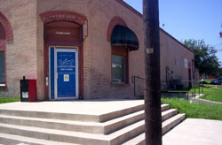

About Advocacy Outreach
Vision Statement
To help build successful people and families with the resources to take care of their own needs, both immediate and long-term, and the ability to advocate for themselves in the community, schools and the workplace.
Our Mission
To facilitate social change and justice through advocacy and a provision of services to the poor and disenfranchised in Bastrop County and surrounding rural areas.
Advocacy Outreach was founded in 1992 with a mission to address the crisis needs and long-term goals of Central Texas families striving to increase their economic stability. A Board of Directors comprised of representatives from the social service fields of mental health, domestic violence, disabilities and HIV/AIDS recruited volunteer attorneys and paralegals to develop an advocacy program which helped with issues such as Social Security disability benefits applications and appeals, divorces, estate planning and discrimination.
Board members and volunteers quickly realized that homelessness and hunger were serious problems for disabled or displaced individuals involved in lengthy legal processes and they began to seek additional resources. Americorps VISTA sent in a team of grant writing experts who helped the grassroots organization add programs that prevented families from losing housing. The original founders were Sallie Humphries Wagner, Debra Brackin Wardell and Beth Rolingson Besson. The first VISTA grant writing team members were Peg McIntosh, Bob Evans, and the late Wes Bennett.
Within the first year of operations, Amy Normand, Director of Ten County Adult Education Cooperative, paid a visit to Advocacy Outreach's one-room office in downtown Elgin and suggested that the organization address the educational needs of its client populations. Ten County Co-op provided funding for a Lifeskills Class for homeless women. Twelve women developed a budget, created and marketed their silk scarves in a local hand crafts store, improved their literacy and math skills, learned budget and business skills, and increased their self-confidence.
Nearly twenty years later, Advocacy Outreach has continued and expanded educational services to the community and currently operates a family literacy program that addresses the literacy needs of parents and their preschool-age children, several English as a Second Language classes in Elgin and Manor, a Citizenship class, and GED classes in collaboration with Community Action and Manor ISD.

The organization now occupies a 3,000 square foot historic building in the heart of Elgin. The site houses a Free Thrift Store, the Al Guerrero Learning Center with a computer lab and classroom, a Day Shelter for those in need, and Advocacy Offices where clients may receive help to prevent or overcome homelessness or assistance linking to resources they need to increase financial stability, address health needs or personal crises.
Advocacy Outreach
200-A Depot Street, P.O. Box 169, Elgin, Texas 78621
Phone 512 281-4180 • FAX 512 281-9599
501(c)3 Non-profit Organization